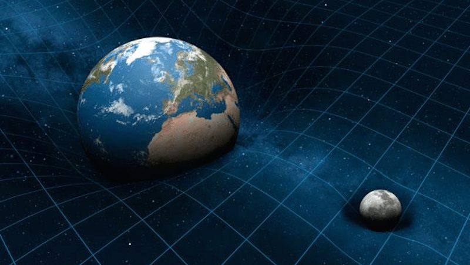
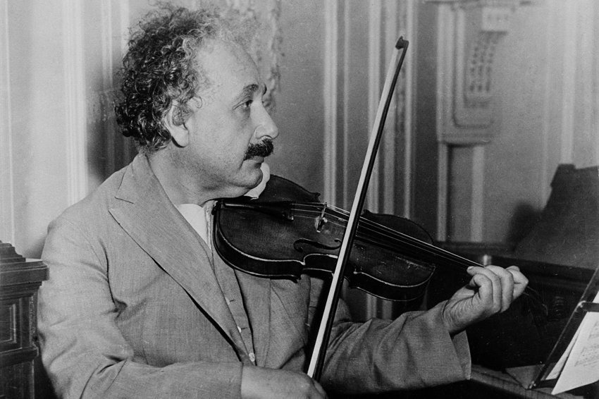

Albert Einstein nació el 14 de marzo de 1879 en Ulm, Alemania, en el seno de una familia judía no practicante. Sus padres fueron Hermann Einstein, quien trabajó en electricidad y en negocios familiares, y Pauline Koch, quien se hizo cargo del hogar y apoyó su educación. Einstein mostró desde joven una fuerte curiosidad por las matemáticas y las ciencias, despertada especialmente por el estudio de la geometría cuando tenía 12 años.
Durante su juventud tuvo experiencias educativas mixtas, pero finalmente estudió en la Escuela Politécnica Federal de Zúrich (hoy ETH Zúrich), donde se formó en física y matemáticas y completó su formación académica en 1900.
Einstein trabajó como físico teórico y también en la Oficina de Patentes en Berna, Suiza, mientras desarrollaba sus ideas científicas. En 1905, año que se conoce como su annus mirabilis o “año milagroso”, publicó varios trabajos que cambiaron la física para siempre, incluyendo explicaciones sobre el efecto fotoeléctrico, el movimiento browniano y la Teoría de la Relatividad, una reformulación profunda de la gravedad que explicó cómo la masa y la energía afectan al espacio y al tiempo, en la que introduce la famosa ecuación E=mc2.
Uno de sus logros más destacados fue recibir el Premio Nobel de Física en 1921, otorgado por su explicación del efecto fotoeléctrico, que fue fundamental para el desarrollo de la física cuántica.
Además de su trabajo científico, Einstein tenía intereses personales fuera del laboratorio: le gustaba mucho la música, especialmente tocar el violín, y se involucró en debates sobre temas sociales, como el pacifismo y la responsabilidad moral de los científicos.
Finalmente, Einstein falleció el 18 de abril de 1955 en Princeton, Nueva Jersey, Estados Unidos, donde vivió sus últimos años trabajando en el Instituto de Estudios Avanzados. Actualmente, Sus ideas siguen siendo pilares de la física moderna y han influido incluso en campos como la cosmología y la tecnología moderna.